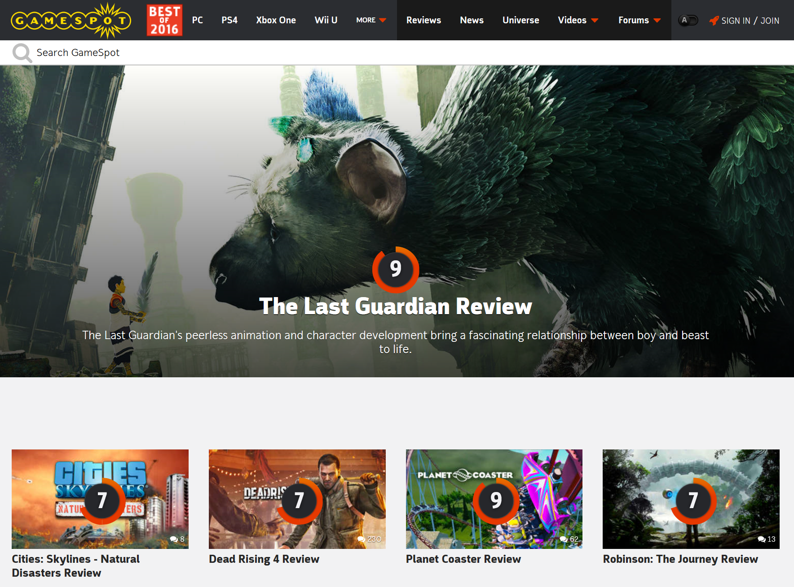
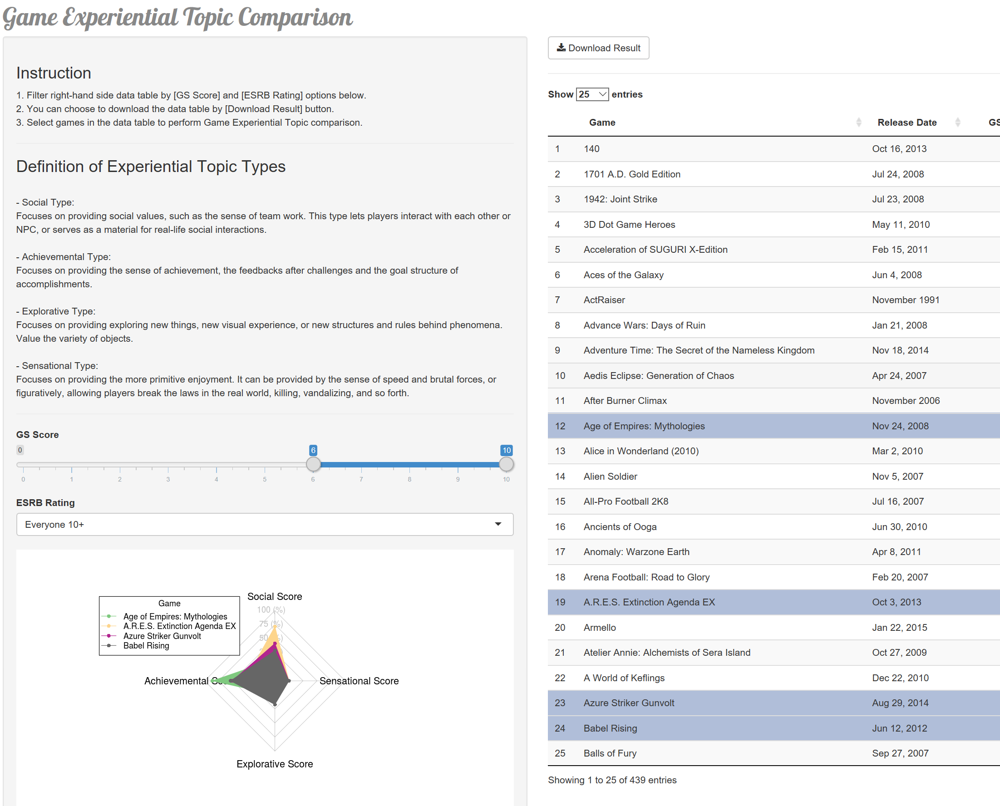

Chih-Yu Chiang • chihyuchiang@uchicago.edu
Shun Wang • shunwang@uchicago.edu
This research aims at knowing more about video game in general. It examines the relationship between sentiments existed in video game’s product consumptive experience, which is examined through online game reviews, and its product evaluation score, a general indicator of product satisfaction, and the moderating role of game experiential categories. We hypothesize and partially verify a positive relationship between positive emotions and product evaluation score, and, on the other hand, a negative relationship between negative emotions and product evaluation score. We also examine the confound effect of game experiential categories on the relationship in the afore-mentioned hypotheses.
Emotions in product consumption has long been treated as an important part in the consumptive experience as a whole. Product experience contains emotional experience, along with aesthetic experience and experience of meaning (Desmet and Hekkert 2007). Some scholars even define user experience as dynamic internal and emotional state of a user which happens when and after interactions with products (Hassenzahl and Marc 2008).
Emotions are central due to their critical role in influencing customers interacting with products, which often play triggers of thinking, which influence product evaluation (Wood and Moreau 2006). Many literatures confirm this relationship. Oliver argues that positive and negative emotional affect’s effect on product satisfaction (1994), while Gorn, Goldberg, and Basu claim mood’s influence on consumers’ product evaluation process even when the mood is not directly aroused by the product itself (1993).
In the first half of This research, we intend to examine this highlighted relationship between emotions during consumption and product satisfaction. On top of that, we apply this examining process to games with different game experiential topics, and observe the differences in between.
Positive emotions, including anticipation, joy, surprise, and trust, in video game’s product consumptive experience, positively influence video games’ performance in product evaluation score.
On the contrary, negative emotions, including anger, disgust, fear, and sadness, in video game’s product consumptive experience, negatively influence video games’ performance in product evaluation score.
The effects described in Hypothesis 1 and Hypothesis 2 are moderated by game experiential categories. In other words, One sensation could have varied effects on product evaluation score of games of different game experiential categories.
In this research, product satisfaction is proxied by a general evaluation score provided along with online product reviews. On the other hand, emotions are more difficult to be measured due to the ephemeral nature (Khalid and Helander 2006). Scholars propose different ways approximate them by methods such as retrospective interview and activity experience sampling (Bevan 2009). Based upon that, this research attempts to capture the emotional snapshot (Vermeeren et al. 2010) by examining emotional words employed in video game online text reviews from GameSpot (www.gamespot.com), one of the major game information platform in the U.S.. Game experiential categories are defined by an array of scores developed from LDA model. It analyzes online product review texts and infers the experiential categories from latent text topics.

This analysis draws upon 5,549 professional English game reviews from GameSpot (www.gamespot.com), which we scrape drectly from the website and represents more than 5,000 video games published from 2000-2016. After reading the dataset into R, we change the encoding to ASCII, tokenize the text into single words, remove stop words provided by tidytext package, and transform words into stem forms by SnowballC package. The words belonging to the Game title in the corresponding review article is also removed to eliminate natural bias of mentioning names of the games in their reviews.
The tidied dataset ready for analysis contains 1,786,690 observations (words). At the meantime, each games’ general review score is acquired from the same website, too. It comes from professional evaluation performed by that same game information website (GameSpot).
# Main dataset
# Read data, adjust encoding, remove duplicate data
text_raw <- read_csv("../data/df_cb_main.csv") %>%
mutate(Review = iconv(Review, "ASCII", "UTF-8")) %>%
transmute(GameTitle = `Game Title`, Review, GSScore = `GS Score`, ESRB, ReleaseDate = `Release Date`) %>%
arrange(GameTitle, GSScore) %>%
distinct(GameTitle, .keep_all = TRUE)
# Remove game title words in each review
title_tidy <- text_raw %>%
mutate(TitleToken = GameTitle) %>%
unnest_tokens(word, TitleToken) %>%
select(GameTitle, word)
i <- 1
for(title in text_raw$GameTitle){
title_tidy_single <- filter(title_tidy, GameTitle == text_raw[[1]][i])
for(titleText in title_tidy_single$word){
filterTextS = paste("(^(", titleText, ") )", sep = "")
filterTextO = paste("(( ", titleText, "))", sep = "")
text_raw[i, 2] <- gsub(filterTextS, "", text_raw[i, 2], ignore.case = TRUE)
text_raw[i, 2] <- gsub(filterTextO, "", text_raw[i, 2], ignore.case = TRUE)
}
i <- i + 1
}
# Tokenize review, remove stop words, stem words
text_tidy <- text_raw %>%
unnest_tokens(word, Review) %>%
anti_join(stop_words, by = "word") %>%
mutate(word = wordStem(word))
# Remove frequent general topic words
wordSieve = c("game", "games", "game's", "play", "feel", "time", "experience", "makes")
text_tidy <- text_tidy %>%
filter(!word %in% wordSieve)Tf-idf index is applied to measure how much information a word provides. The strongest words as shown in the graph contains many experiencial words such as trust, people, spacious, and arduous. This illustrates one of video games’ core value, providing emotions to the players.
# Generate tfidf index
text_tfidf <- text_tidy %>%
group_by(GameTitle) %>%
count(word, sort = TRUE) %>%
bind_tf_idf(word, GameTitle, n)This analysis calculates emotional scores of each game review by words’ tfidf indicator. The relationship between those emotional scores and the general evaluation scores is then examined by general additive model, which provides the best fit after comparing with randon forest and linear regression methods. All models’ effectiveness is examined, and their robustness is evaluated by applying 5-fold cross validation and a training and testing sample division. Lastly, for topic analysis, LDA is adopted to extract the four major topics from the input of game review texts.
Through the operations, the model reveals several of its limitations which researchers have to tackle with in further studies (like in my final project). One of the most critical is the somewhat weak explanatory power of emotions on the general evaluation score. The experiential topics developed from LDA do not provide a strong interpretation in game experience, instead, they inclined to conform to and verify the traditional game categories. I argue that the models obviously need more control variables or advanced data processes, such as a further categorization of the meaning of words, to stand out the effects of experience and sentiments. We are also considering apply tools such as Principal Component Analysis to reduce and concentrate the dimentionality before employing the LDA method.
Indeed, the weak relationship between emotions and general evaluation scores could also attribute to vodeo games’ special product characteristic which provide emotional satisfaction through not only positive but also negative emotions such as fight against bosses and killing enemy. This could potentially mitigate negative emotions’ negative effects on the general score. Future research in other types of products is suggested for better clarification.
This is an app built upon the game data we apply in our research. In the app, you are allowed to filter games by GS Score and ESRB Rateing, and explore and compare the target games experiential composition in terms of the four topics we developed.
The app can be access anytime from here here, or the botton Exploratory App locates at the site’s navigation bar. 
Bevan, N. (2009). What is The Difference Between The Purpose of Usability and User Experience Evaluation Methods? Interact 2009, (August), 1–4.
Vermeeren, A. P. O. S., Law, E. L., Roto, V., Obrist, M., Hoonhout, J., & Väänänen-Vainio-Mattila, K. (2010). User experience evaluation methods. Proceedings of the 6th Nordic Conference on Human-Computer Interaction Extending Boundaries - NordiCHI ’10, (July 2015), 521. http://doi.org/10.1145/1868914.1868973
Hassenzahl, M. (2008). User experience (UX): Towards an experiential perspective on product quality. Proceedings of the 20th International Conference of the Association Francophone d’Interaction Homme-Machine on - IHM ’08, 11–15. http://doi.org/10.1145/1512714.1512717
Gorn, G. J., Goldberg, M. E., Basu, K., Gorn, G. J., & Goldberg, M. E. (2016). Stable URL : http://www.jstor.org/stable/1480228 Mood , Awareness , and Product Evaluation, 2(3), 237–256.
Wood, S. L., & Moreau, C. P. (2006). From Fear to Loathing? How Emotion Influences the Evaluation and Early Use of Innovations. Journal of Marketing, 70(3), 44–57. http://doi.org/10.1509/jmkg.70.3.44
Desmet, P. M. a., & Hekkert, P. (2007). Framework of product experience. International Journal of Design, 1(1), 57–66. http://doi.org/10.1162/074793602320827406
Khalid, H. M. (2006). Customer Emotional Needs in Product Design. Concurrent Engineering, 14(3), 197–206. http://doi.org/10.1177/1063293X06068387
Oliver, R. L. (1994). Conceptual Issues in the Structural Analysis of Consumption Emotion, Satisfaction, and Quality: Evidence in a Service Setting. Advances in Consumer Research, 21(1977), 16–22.